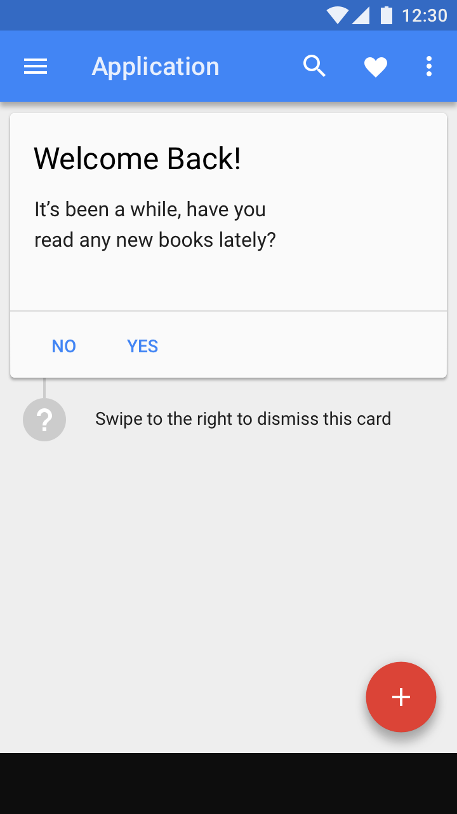

设计模式
单步操作
提示用户去尝试那些通过单击就能完成的功能，例如在地图应用中保存一个位置。
点击目标

提示文本
多步操作
提示用户去尝试那些需要多次点击才能完成的功能，例如在照片应用中启用自动备份功能。
引导流程
提示用户去尝试那些通过单击就能完成的功能，例如在地图应用中保存一个位置。
点击目标
提示文本
提示用户去尝试那些需要多次点击才能完成的功能，例如在照片应用中启用自动备份功能。
引导流程
在与用户所处情境相关的时刻，把特性探索呈现给需要的用户时，特性探索提示会起到更大的作用。当在错误的时刻呈现给错误的用户时，反而会打扰用户，令人烦恼。
定位
显示与特定用户相关的功能。
定位适合的用户 | 优先呈现适合的特性 |
给尚未尝试过这些特性的用户显示特性提示。 不要把高级特性显示给初级用户。 把常规特性显示给所有用户，例如在 Gmail 中撤销已发送的邮件。 | 特性探索应该随着时间的推移持续进行。 优先考虑与用户所处情境相关的特性，而不仅仅是新特性。 |
触发
特性探索提示出现次数要适当。
不要在打开应用时显示 | 在与用户所处情境相关的时刻 | 自然停顿 |
如果用户打开应用是为了完成特定的操作，那么在打开应用时出现的特性提示可能对用户没什么帮助。 避免在打断用户的时候显示特性探索提示。 | 特性探索提示出现时，可以帮助用户更好地完成他们正在进行的操作。 例如，让用户知道只有在添加图片后才能裁剪图片。 | 如果无法做到只在触发特定操作时显示特性探索提示，请在用户体验过程的自然暂停期间显示。 例如，在邮件应用中，在用户读完或发送完消息后才显示特性探索提示。 |
数量和频率
用户和消息进行了交互，则表示用户对消息感到满意。应用可以依此决定什么时候显示下一条消息。
数量 | 频率 |
限制 UI 中的特性探索提示的数量。例如，不要在一个会话中使用多个特性探索提示。 | 如果用户忽略了一条消息，在之后很长一段时间内不要再显示这条消息、或者和这条消息相关的消息。 如果用户接受了一条消息，说明用户觉得这条消息对他有用。可以在较短的时间内再次显示类似的消息。 |
特性探索场景和应用 UI 有特定的 Material Design 组件。
特性探索场景 | 设计组件 |
提示一项操作可以通过单击来完成 | 点击目标，提示文本 |
提示一项操作需要进行多次交互才能完成 | 引导流程 |
特性探索提示把用户的注意力集中到特定的 UI 元素上。包括在圆形点击目标的外围，包裹一个较大的有不同背景色的区域。
提示只包含单个操作，不存在附加操作。
用户可以通过滑动手势、或点击提示背景之外的地方来关闭提示。
特性探索提示包含一个被大背景区域包裹的点击目标，该大背景区域使用应用的主色。
可以修改提示来适应不同的屏幕位置和显示尺寸。
在移动端，点击目标拥有比其他 UI 元素更高的海拔高度，并且可以超过屏幕的宽度。
当提示操作的点击目标位于屏幕顶部或底部的 88dp 之内时（不包括状态栏和导航栏），将点击目标直接放在提示操作上面。
当提示操作位于屏幕中心时，提示背景应做如下调整：
在较大的屏幕上，特性探索提示通常限定在点击目标所在的表面，例如卡片。点击目标的大小应该是可点击表面的大小。
对于不在屏幕中心的点击目标，将提示背景从表面中心偏移。
如果点击目标出现在小于 280dp 的高度和 360dp 的宽度的表面上，则允许点击目标和提示背景超过屏幕的边缘（在更高的海拔高度上）。
点击目标位于距离表面边缘 88dp 以内时，提示背景应该以点击目标为中心进行环绕。
点击目标位于屏幕中心时，将提示背景偏移 20dp。
对于所有其他点击目标，将提示背景放在适合屏幕上其他元素的地方。
当点击目标位于距离屏幕边缘上下（144dp）或左右（200dp）以内时，将提示背景以点击目标为中心进行环绕，并在其他元素的上方。

在较小的表面上，点击目标位于距离屏幕边缘上下（144dp）或左右（200dp）之外的区域时，提示背景可以不限制在点击目标所在的表面。
点击目标可以使用应用或工具栏的主色。
点击目标的背景有 96% 的不透明度。

点击目标的背景使用了主色。
点击目标的背景使用了强调色。
动效可以告诉用户点击目标在哪里生成。
出现
点击目标使用标准 Material 动效曲线从一个高亮的图标上生成。
生成后
生成后，高亮的操作按钮会在一秒内放大 10%，然后再缩小。涟漪效果会从操作按钮出发，放大到其最大尺寸。
交互
点击高亮的操作按钮会展开点击目标，然后缓缓淡出。
忽视
触摸点击目标外面的区域，点击目标会收缩，并缓缓淡出。
出现、出现后和交互的动效
出现、出现后和忽视的动效
引导流程会引导用户完成需要多个步骤的任务。
引导流程
引导流程可以最多包含 3 个设计组件。使用最适合您 UI 中特定任务的组件。
1. 点击目标
点击目标通过高亮使用者效益来提前介绍任务。
2. 涟漪
涟漪指导用户完成后续的步骤。
涟漪的颜色应该和点击目标的颜色相匹配。
3. 完成 toast
完成引导流程后，提供一个 toast 来确认用户已完成任务。
包含一个操作，可以使用户回到点击目标出现的地方。
点击目标用于引出引导流程。
涟漪用于紧接着的步骤。
toast 用于确认任务已完成。
对于需要用户输入的更小、更轻的提示，使用提示文本代替点击目标。
提示文本示例